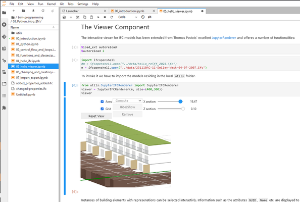
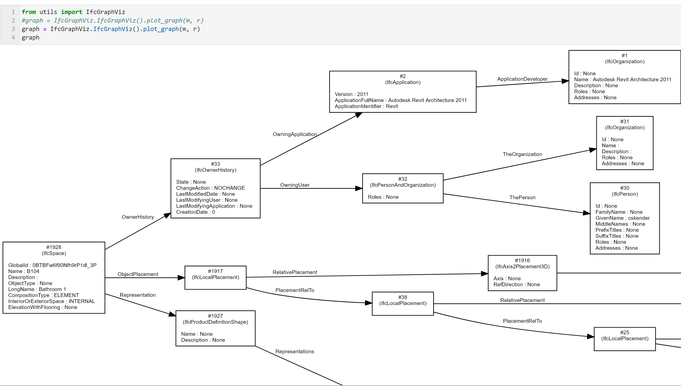
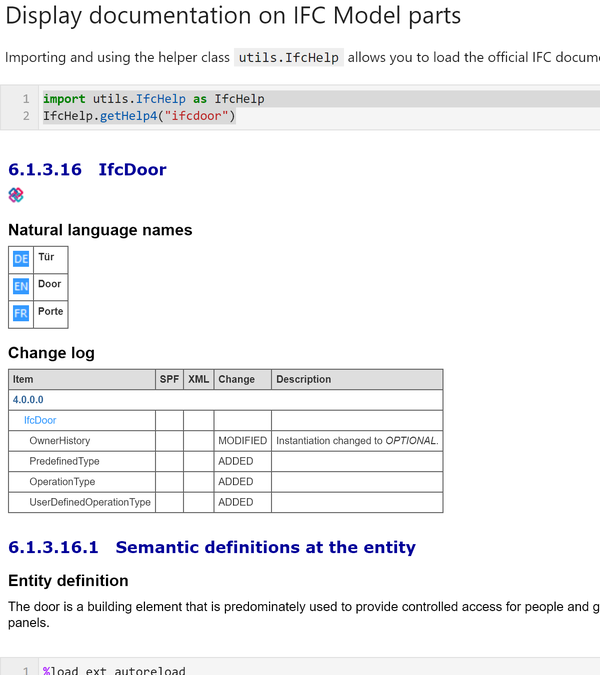

Using IfcOpenshell in Binder Notebooks with web-viewer and graph visualization
As an early release (still a little rough around the edges), this repo has been created to allow students to get familiar with ifcopenshell without any knowledge. Its zero-setup running Jupyter-notebooks on binder.
to launch now click this: 
Some of the features are: 
-
a viewer adapted from OCCJupyterViewer added with
-
two-directional-selection viewer <-> model
- section sliders for sections
- attribute value lister
-
set and get colors
-
graph visualization of the scene graph 
-
integrated IFC documentation 
There are many more examples, quizzes and task in the German version that is part of a mandatory 4th term class for 250 architecture students at the RWTH Aachen that will be migrated over time. We are very open and happy about suggestions, issues, PRs and feedback!
TODOs:
- more explantory text
- English verion of slides with RISE to be used in lectures
- move viewer to SideCar (was not possible in the RWTH-Jupyter-Cluster yet)
I will be applying for some more funding to extend this into a good Open Educational Resource (OER) book from provincial sources in NRW/Germany, very open for collaboration ...
Comments